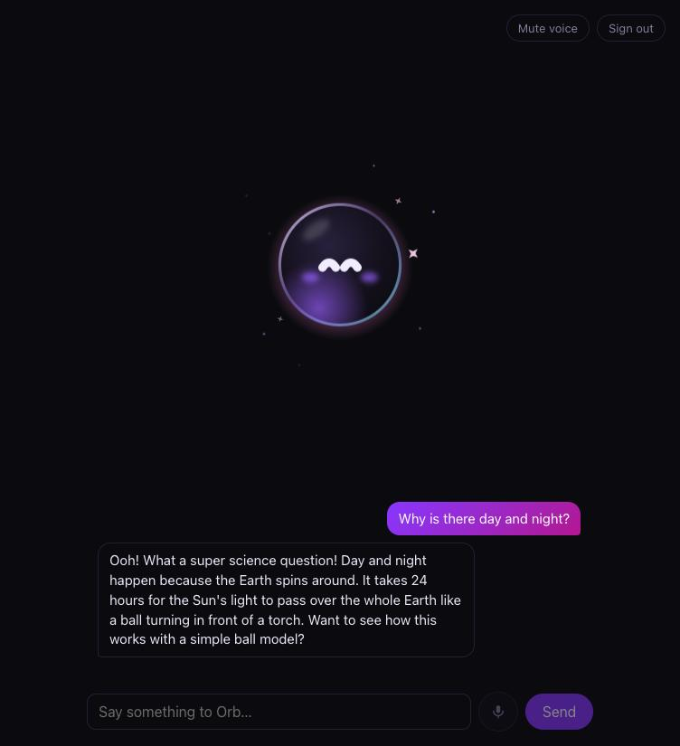
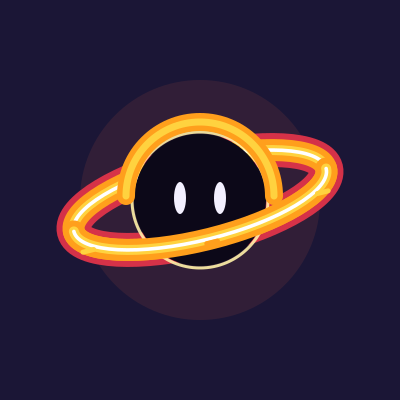

Every kid asks "Why?"
Space is big.
Answers are hard to find.
Answers are hard to find.
Books are too long. Videos are too dry. The internet is not always safe.
Meet TyTalk
Talk with Orb, a friendly star that answers out loud.

Ask a question. Orb answers in simple words.



Orb becomes the Sun, a planet or a black hole.
SimpleSafeMade for ages 5–15
Every answer ends with another question to explore.
TyTalk
Every question is a new trip into space.
Get Started →